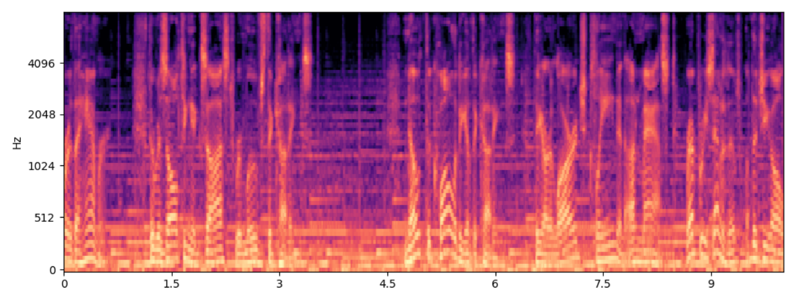
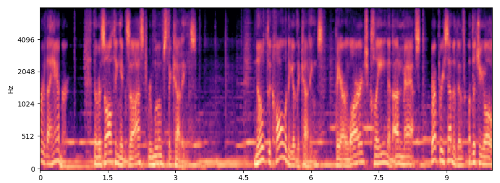
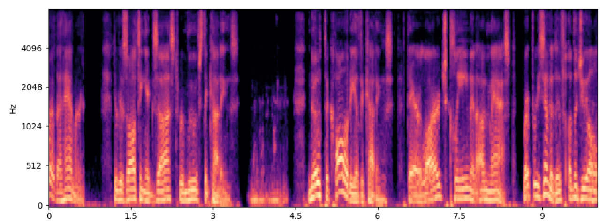
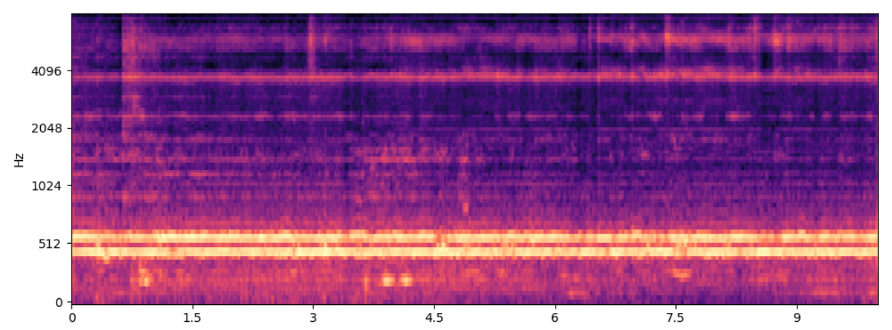

This is the demonstration page of our method. Please note that, due to limitations in the training data, the lip movements in the videos may not be synchronized with the generated speech. All audio samples are generated at a 16 kHz sampling rate. This page is intended for academic research purposes only.
This section demonstrates the Video to Context-Aware Text-to-Speech Synthesis task, where a prompt speaker, transcript, and video are provided to generate corresponding audio that aligns with the visual context with intelligible speech.
| Source Video | Prompt speaker & Transcript | BVS (Ours) | VATT |
Transcript: Good football team to open goals here. What a way to do it. Well, we had one goal come to this team. To make sure 16 teams left. |
|---|---|---|---|
Transcript: Good boy. Good boy. Come on. Good boy. That's a good boy. |
|||
Transcript: So it's going to create the overlock stitch and cut off the excess fabric at the same time. It's pretty cool. |
|||
Transcript: That bass is so much bigger than you do. I mean, it's so huge. Huge. Yes! AJ, I got one thing to tell you. Don't be jealous. |
|||
Transcript: You are wrong. Our children will not live under communism. Your children will live under freedom. |
|||
Transcript: We've got the beach to ourselves! Oh, the beach? You need a tap of that. Twenty pence please. Here you are. |
|||
Transcript: Dark honey. These are honey cells here so... Yeah, there's a brood in here. |
|||
Transcript: tired of sitting around I'm here with Terry from another edge driver in truck 138 and he's fired up the barbecue he's cooking fajitas |
|||
Transcript: Is he talking? Ew! Buddy, no! He's talking. |
This section demonstrates the immersive audio background conversion task, where an audio recording and a video are provided, and the speech content is adapted to match the context of the given video.
| Source Video | Targe Audio | Converted Audio |
|---|---|---|
This section provide the audio samples that used to plot our Figure 3.
Ground Truth

Reconstructed sample of audio semantic token

Generated sample of speech SSL token

Generated sample of the residual embedding of audio semantic token and speech SSL token
